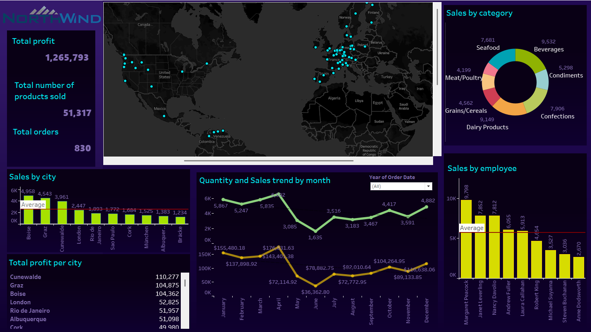

Junior Data Analyst with experience in data and visualization. Proficient in SQL, Power BI, Tableau, and basic Python programming, focused on developing dynamic reports and dashboards that improve KPI tracking and support business decision-making. Known for strong attention to detail, data accuracy, and the ability to manage sensitive or repetitive processes reliably. Highly motivated by continuous learning, technological innovation, and a results-oriented.
Visualización creada en Tableau Public para analizar patrones de clientes y comportamiento de compra.
Puedes contactarme a través de: